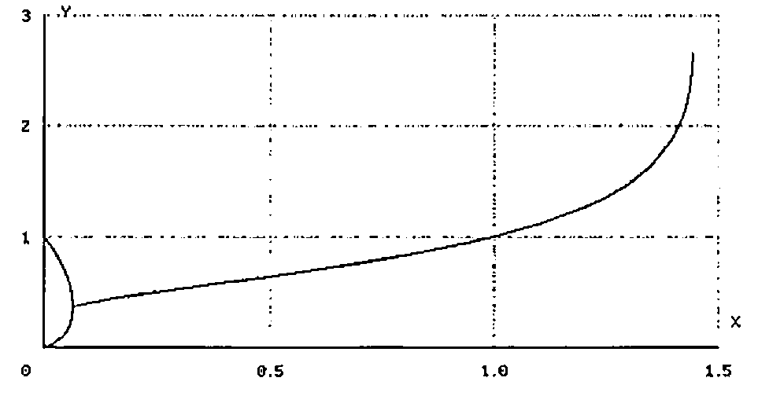
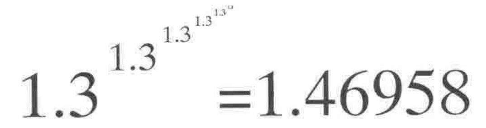

Power Reduction
Vector 8:2, page 96
Transcribed from the printed issue; not yet reviewed. Read it in the PDF of the issue, page 96
How many large numbers there are that my computer cannot represent.
The number I could not calculate is the next in this sequence:
Its number of digits is:
What is the number of digits in */6⍴2 ?
The number of digits seems to escalate as quickly as the numbers themselves. Working with 10 rather than 2 gives us a clue to behaviour:
An extension to the commonly used exponent notation would give the result of *\4⍴10 as 10 1E10 1E1E10 1E1E1E10. The number of noughts in these 4 numbers is 1 10 1E10 1E1E10.
The numbers we encounter in the world are small by power reduction standards: even the number of atoms in the universe is currently estimated as 1E80 or */10 80 or */47.7 47.7 or */3⍴3.74 or */4⍴2.28. Where does this progression lead?
There is a hint of convergence in this sequence: as if there is some number X beginning 1.44… for which */VL⍴X would give 1E80 for all values of VL that were very large. What happens if I take a slightly smaller number than 1.44… and see what effect VL has.
Power reduction on a large number of 1.3s appears to converge.
I estimate that a power reduction on an infinite string of one number will converge provided the number is less than 1.4446678. If the number is less than 0.06599 there is another surprising result:
There is convergence to two different values, a smaller value for odd-lengthed strings.
I can state what I have demonstrated like this: provided X is within the range 0.06599 and 1.44467 and VL is large enough, */VL⍴X defines a number, Y, say. Plotting Y versus X produces the curve below. It includes the bifurcated piece where X varies between 0 and 0.06599.

Power reduction also converges on long repetitions of groups of numbers, such as 0.1 2 0.1 3. It is an algorithm for separating sequences of numbers into 3 categories: non-convergent, convergent to just one number, and convergent to two numbers.
PS. These results are new to me. In APL they were easily explored and explained. Had I been thinking in conventional mathematical notation I would have been writing expressions like:

instead of 1.46958=*/6⍴1.3. Another confirmation of the power of APL as a tool of thought!